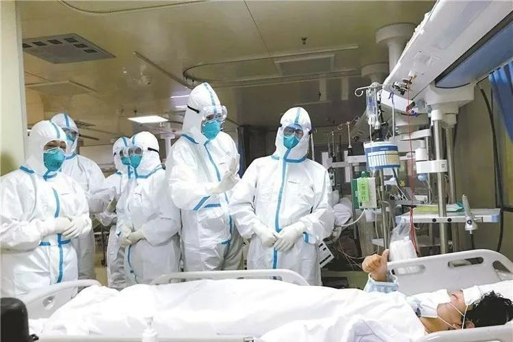
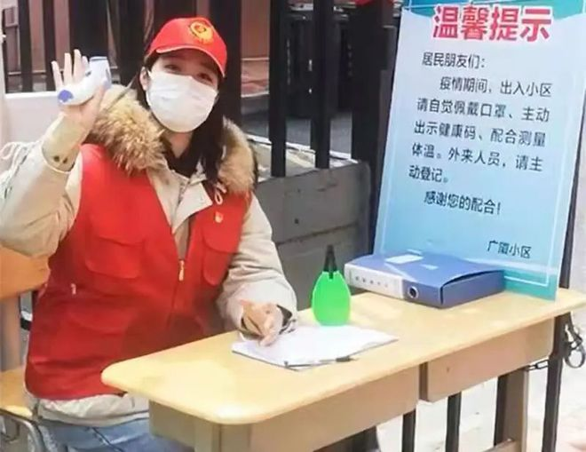

向英雄致敬
 在抗击新冠病毒疫情中，总有那么一些镜头让人泪目和深感温暖。 每一个平凡的日子，都有那么一些人为了更好的明天，铭记着初心、担负着使命，选择了逆行，向这些逆风而行的勇士、奋斗在疫情防控一线的逆行天使致以崇高的敬意和衷心的感谢。 感谢他们默默的坚守！ 这世上哪有什么岁月静好，只是因为有人在替我们负重前行罢了，这世上哪有什么天生的英雄，只有因为人们需要，才有人愿意牺牲自己成为英雄。 每个时代有每个时代的英雄，灾难面前，他们毅然逆向前行，不畏生死，他们当之无愧是这个时代的英雄，向英雄致敬。
疫情中的温暖和力量
 老百姓在这场疫情中遭受了疫情带来的苦难，很多人为了亲情、友情付出了自己巨大的爱。 还有很多人冒着生命的危险，冲在抗疫第一线。特别是当地的医护人员，他们是伟大的战士，是了不起的英雄。 他们从疫情萌芽至今仍在坚守，仍在一线作战，他们的付出、牺牲、奉献，给了我们最大的感动，值得我们给予最高的礼遇， 给予英雄的赞美。那些为我们雪地抱薪、深夜提灯的人，不仅值得我们感恩，更值得我。